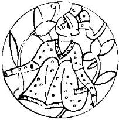

O gece Korkut Ata’nın konuğu oldum. O konuştuğumuz odada uyudum. Yerimden yurdumdan çok uzaklarda, hem bana çok yabancı hem bir biçimde tanıdık bu kentte, sokaktan gelen alışık olmadığım sesleri dinleyerek yerdeki yatağın üstünde uzun süre düşündüm. Tam olarak kim ne istiyor, kim doğrudur, kim yanlıştır bilemiyordum. Ben kimin oyununda ne yapacaktım, onu da bilemiyordum. Açık havada geçen günlerin alışkanlığıyla, o kadar yastık varken dengimi yastık yapıp güzel bir uyku çekmeye karar verdim. Bozkır gecelerinin duyarlı kıldığı kulaklarım gecenin bir yansında odanın keçe kapısının sessizce açıldığını duydu. O yöne baktım. İçeri giren gölge, Korkut Ata olmak için çok inceydi. Uyumadığımı görünce girdiği gibi dışarı çıktı. O gece bir daha odama gelen olmadı. Tan atana kadar uyudum. Gerinerek dışarı çıktım. Elimi koyduğum korkuluğun üstü serin, buz gibi küçük çiy tanecikleri ile kaplanmıştı. Korkut Ata da uyanmış, sabahın serinliğinde, yüzünü doğuya dönmüş, doğan güneşe karşı yükünüyor, dua ediyordu. Hazar ülkesinde gördüğüm bir şey değildi. Oğuzların geleneklerinde, davranışlarında hâlâ epey bir Doğululuk var gibiydi.
Korkut’un evine çıkan basamağın yanında ise bu Hazarlar’ın tuhaf bir işini gördüm. İki Urus köle bir kısraktan süt sağıyorlardı. Kısrağın memelerine yapışan adamın kalın parmaklarına, sıkılan memeden fışkıran ak sütün ince bir çizgi halinde süt kabına düşmesine, kabın içinde çizik çizer gibi çıkardığı cızırtılı sese şaşırmadım. Bundan bizde de var, başkası olmaz. Ama öbür köle, alın kuyruğunu kaldırmış, yanaklarını var gücüyle şişirmiş, hayvanın cinsel organına soktuğu bir demir boruya durmaksızın üflüyordu. Duasını bitiren Korkul Ata şaşkınlıkla baktığımı gördüğünde yanıma geldi. Elini omzuma koydu.
“Kısrağın damarlarını genişletip daha çok süt almak için tigin! Bazı kişiler tayalara da yapıyorlarmış, işe yarıyor mu bilmem! Atalardan kalmış, yapıyoruz işte” dedi. Çın çın, neşeli bir kadın sesi tam arkamızda öttü:
“Doğu’da yapmıyorlarmış Dede! Bu yoksul da az süt içmiş, kavruk kalmış!”
İkimiz birlikte döndük. Selcük Aka, giyinmiş kuşanmış, atına binmiş, Sarkel dışına çıkarak sabah gezintisini yapmaya giderken bize de uğramıştı. “Sen de gel Tigin!” dedi. Biraz önceki kavruk sözü, delikanlı gönlümü epeyce incitmiş olmalıydı. Dağ gibi Tengere Tardu’yum ben. Evet biraz arıkım bu sıralarda ama aylardır hayvan sırtındayım. Benim nerem kavruk? Ellerimi iki yana açıp,
“Bey kızı, benim kulanım size ayak uyduramaz, siz varın gidin!” deyince, Dede başıyla, sağılmakta olan kısrağı göstererek “bunu al” dedi.
Yoksul Azman’ımı boğazladıktan sonra at sırtı görmemiştim. Gözlerim ışıldadı. Dede yine başıyla gösterdi, kölelerin biri kısrağı eyerledi, diğeri içi ılık süt dolu tası bana uzattı. Altın donlu, uzun, ince bacaklı, uzun kara yeleli, alnında akıtması ve sağ arka bacağında ak sakan olan çok güzel bir hayvandı, içeri koştum, küçük dengimi alarak terkiye bağladım. Sevinçle kısrağın sırtına atladım. On dakika sonra Sarkel’in dışındaydık. Sanki sözleşmiş gibi benim ak sığını sunduğum yere gittik. Atımı o küçük tümseğe sürdüm. Ne doğudaki yürek, ne batıdaki baş, ne de başka bir şey vardı. Bana göre adağım kabul edilmişti. Selcük Aka’ya göre yırtıcı hayvanlar götürmüştü. Bilemedik. Kentten iyice uzaklaştık. “Sen hiç korkmaz mısın Selcük Aka?” diye sordum. Yarım bir utangaçlıkla, inci mercan dişlerini göstererek, gözlerini ışıldatarak, gülümseyerek fısıldadı:
“Demir Yaylı Tuğak’ın kızına kim ne yapabilir? Erkek sinekler bile görünce havada yönlerini değiştiriyor.”
Bu son sözünde sanki biraz yerinme, bir yakınma vardı. İçimin bu bakışa, bu gülüşe akışını biraz olsun yavaşlatmak için sordum:
“İmdi yaşamım için korkayım mı bey kızı? Kavruğum mavruğum ama ne de olsa sineklerden daha er sayılırım.”
Kıpkırmızı olunca üzerine varmadım yoksulun. Sözü değiştirdim:
“Sen bana inanıyor musun Selcük Aka?”
“İnanıyorum Tigin. Doğu’dan geldin, bizim bilmediğimiz bir boyun oğlusun. Maşiah mısın değil misin bilmiyorum, ama sen de bilmiyorsun. Kimseyi de kandırmaya çalışmadın. O yüzden sana inanıyorum.”
Sonra, Ten Suyu’na bakan bir tepecikteki yalnız ağacın altına oturduk. Daha doğrusu o oturdu. Sırtını ağaca yasladı. Ben de kara başımı onun dizlerine koydum. Hiç ses çıkarmadı. Ona, çocukluğumdan başlayarak, bazı yerleri atlasam da, hemen her şeyi anlattım. Bitirdiğimde gözlerinde yaşlar gördüm.
“Çok güç bir yaşamın olmuş. Bense doğduğum İdil ile şu Sarkel’den başka yer tanımadım. Batı’da en uzak geldiğim yer işte burası. Bundan öte ne var bilmiyorum. Başka bir yere gider miyim, onu da bilmiyorum.”
Bunları öyle bir üzüntüyle söyledi ki... Onu avutmak için büyük bir inançla,
“Gideceksin bey kızı, görürsün!” dedim. Sonra birden yerimden fırladım.
“Bey kızı şar kapısına kadar yanşa var mısın?”
Varmış! İki dakika sonra atlarımızın boynuna düşmüş, Sarkel’e doğru uçuyorduk. Çok iyi ata biniyordu, bunu zaten biliyordum. O ise daha önce ancak kulan sırtında gördüğü bir –yani yeryüzünde kalan son– Köktürk Tigini nasıl ata biner, bilmiyordu. Ateş gibi biner, yel gibi biner! Otça gider, borça gider. Götüren at, üstünde başka bir gövde taşıdığını anlamaz, sanır ki sırtından başlayarak biraz daha büyümüştür! Omuz başlarından koşa kanatları çıkmaktadır.
Şarın kapılarına birkaç yüz adım kalıncaya kadar hep üç at boyu geriden izledim Selcük’ü. Dönüp dönüp bakıyordu. Bir at boyu daha geride kaldım. Dönüp baktığında gülümsedi. Daha başını önüne çevirirken fırladım. Atımın birkaç kanat çırpışından sonra onu yakaladım. Tam yanından geçerken, alayla “Bey kızı atın durmadı, sakın inmeye kalkma” dedim ve topukladım. Üzengilerde ayağa kalkmış, tüm ağırlığımı öne vermiştim. Yarıştığımızı görenler haber vermiş. Sarkel surlarında epey bir kalabalık birikmiş bize bakıyordu. Hepsinin şaşkınlık çığlıkları arasında, Selcük’ten yüz adım kadar önde, vardım, şar kapısına dayandım.
Birazdan geldi. Ak börkü başından uçmuş, saçları dağılmıştı. Gülerek,
“Beni aldattın Tigin” dedi. Ben de gülerek,
“Gelecek kez bey kızı” dedim. Tuğak aşağı inmişti. Ben de beyin önünde saygısızlık olmasın diye hemen atımdan indim. Takıldım:
“Selcük Aka’mın gözleri yaşlı, belki ak saçlı babasının kolunda güzeller güzeli kızını güldürecek biraz güç kalmıştır.”
Benim gibi bir yoksulun açıktan kızma asılması, Demir Yaylı Tuğak’ın tepesinin tasını attırmıştı. Yarıştan önce, yarışacağın kişinin sinirlerini biraz bozmak pek kötü değildir.
“Ülen köse Tengere, ülen albız yavrusu, ülen mezar uğrusu, davran yayına, Selcük nereden senin akan oluyor? Bre benim demir yayım nerede?” diye kükremeye başladı.
Ben de yayıma davrandım. Acun başıma yıkıldı. Yarışta yayımı, yayımın içinde olduğu dengi yitirmiştim. Dizlerim boşaldı. Hemen atıma atladım. Geldiğimiz tarafa doğru koşturmaya başladım. Çok gitmedim. Selcük, börkünü aramaya giderken dengimi bulmuş, eliyle işaret etti beni durdurdu.
Geri döndük. Tuğak ile çimenlik bir düzlükte yanşa durduk. Önce uzağa attık. Sarp, katı yiğitti. Çelik yayını öyle bir güçle gerip bıraktı ki bükülmüş bağırsaktan kiriş titreşirken bir kopuz teli gibi öttü. Ok uzaklara, pek uzaklara düştü. Tuğak’ın biraz önceki alaylarına cevap vermenin sırasıydı:
“Tuğak Bey, kündü kağan, Tengere Tardu Tigin’e bak da Doğu’da nasıl yay çekerlermiş öğren. Uğraş gününde gerekli olur.” Sonra katı boynuz yayıma irice fakat küt demir başlı oklarımdan birini koydum. Göğsümden bir çığlık koptu: ‘‘Mengü Tanrının gücüdür!” Yayımı tutan sol kolum bu çığlıkla gevşedi. Bütün bir meydandan bir uğultu koptu. Yuvarlak demir başlı okum çayıra saplanmadı. Yere inmiş bir ok yılanı gibi otları yara yara kaydı. Kural buydu. Okun değdiği değil, durduğu yer sayılıyordu. Ölçtüler. Tuğak’ın oku 900 adım, benimki 965 adım ileriye düşmüştü. Sonra hedefe atacaktık ki, Sarkel’den bir atlı koşturup geldi. Tuğak’ın kulağına eğilip bir şeyler söyledi. Bayındır Han “gelsinler, iç kalede kabağa atsınlar” demiş.
Bir alay adam şara döndük. İç kaleye tırmandık. Dengimi Korkut Ata’nın ellerine tutuşturdum. İç kalenin ortasındaki düzlüğe çevresinde birkaç büyücek taş olan uzun bir çam direk dikilmişti. Tepesine altından bir kabak, bir yapma susak asılmıştı. Atlarımıza bindik. Yuvarlak alanda direğin çevresinde at koşturmaya başladık. Dönerek yukarı, kabağa ok saldık. Tuğak’ın attığı ilk ok kabağa yandan vurdu ama şişkin yuvarlak gövdesinden geri çelindi, yansıdı, kabağı düşüremedi. Aceleyle attığı ikinci ok direğe saplandı. Üçüncü oku kabağın ipinin yansını kesti. Ben kabak sanki canlıymış da kendini koruyabilirmiş gibi atımla çevresinde dolanıyor, bir açığını arıyordum. Sanırım buldum ki okumu fırlattım. Sivri çelikten üçgen temrenim altın kabağın gövdesini deldi, ipin yarı kesilmiş olmasından dolayı kabağı az ileri fırlattı. Gerilen ipi kopardı, kolayca aşağı indirdi.
Beş dakika sonra Hanlar Hanı Bayındır Han’ın karşısındaydık. İç kaleye bakan en büyük evlerden birinin düz damında altından bir topakev, kocaman bir otağ kurdurmuş, yazları Sarkel’e geldiğinde orada yaşıyormuş Han. Demek uzaktan kentin ortasında ışıl ışıl yanar görünen küçük kubbe buymuş. Sarkel’e geldiğimin ikinci gününde Han’ın karşısındaydım. Altından yapılma büyük çadırında, altın bir tahtın üstünde bağdaş kurmuş oturmuş, benim yaşlarımda bir delikanlıydı. İşe bak! Ben yüz kırk yaşlarında birini beklerken çıka çıka bir delikanlı çıkıyor! Nereden bileyim o zaman kim han olursa ona Bayındır Han dendiğini? Tuğak’tan önce koşarak, önünde dokuz kez yer öptüm. Arsılan uruğundan yaşayan bir akrabamın karşısında olduğum için, içim kıpır kıpırdı. “Yenge İsen Oyun’un selamı var Han” dedim. Konuşmaya vakit kalmadı. Tuğak yaklaştı ve yalnızca eğilerek Han’ı selamladı.
Bayındır Han “Nesine yarıştınız kündü kağan?” diye sorunca, Tuğak üzerindeki, ağır altın tel işlemeli kaftanı gösterdi. Han bana döndü:
“Ya sen ne verecektin Tigin?”
Tigin derken sesinde en ufak bir alay yoktu. Anlaşılan Sarkel’de haberler çabuk yayılıyordu. Korkut Ata’nın elinden dengimi aldım. İçinden kaftanımı çıkarıp, “bunu” dedim. Büyük çadırın içi kahkahalardan uğuldadı. Tuğak soyunup sırtındaki kaftanı bana vermeye hazırlanırken ben yine konuştum:
“O kazanamadığına göre hâlâ benim öz malimdir, sana armağan olarak veriyorum.”
Çadır birden derin bir sessizliğe büründü. Kimsenin tısı bile çıkmıyordu. Genç kağan seslendi:
“Sen ne dersin bu işe Korkut Ata?”
“Alın derim Han’ım. Uğurdur.”
Başrav Un El Kaplan dayanamamış, patlamıştı:
“Nasıl uğurdur Han’ım, şey, siz buna sümüğünüzü bile silmezsiniz.”
Sonrav Benyamin incir daha ileri gitti:
“Han’ım bu size sövmek gibidir. Şu Maşiah bozuntusunu asın gitsin boğazından.”
Birkaç adım öne yürüdüm. Han’ın dizleri üstünde tuttuğu kılıcını istedim. Hoş bir biçimde çekip verdi. Korçular yaylarını anında gererek oklarını üstüme çevirdiler. Han eliyle onları yatıştırdı. Yere çöktüm. Kılıcın keskin ucuyla, beyaz ince keçeden yapılma kaftanımın omzundan başlayarak dikişlerini kesmeye koyuldum, işim bitince ensesinden tutarak kaftanımı keçe kılıfından çıkardım, göstere göstere kaldırdım. Han dışında bütün çadır şaşkınlık içindeydi. Çok ince halkalardan, kaftan biçiminde yapılmış altın zırhın ışıltısı gözlerine dolmuş, her biri bir şeyler söylüyordu. Sonrav incir kendini yere atmış, önümde,
“Maşiah, Maşiah, ben geleceğinizi hep bildim, buna hep inandım. Kulun İnciri yarlığa...” türünden saçmalıyordu. Başrav’ın yerinde ve ustaca atılmış bir tekmesiyle biraz kendine geldi. Bayındır Han gülüyordu.
“Aldım, kabul ettim, sen de kılıcın kınını al, ayrı kalmasın! Nereden buldun bu kaftanı Tigin?”
“Böyle bir kaftan bulunur mu Han’ım? Büyük atam Urungu İnanç Tigin’e babası Bilge Kağan, saltanatının sonlarına doğru vermiş.”
“Niye sonlarında?”
“Bilge Kağan kağanlığının sonlarına doğru biraz göbeklenmiş de...”
Bayındır Han gülerek zırhı inceledi. Sonra,
“Korkut Ata. Nereden bildin uğurlu olduğunu?” diye sordu. Cevap yalındı:
“Han’ım, keçe olmak için çok ağırdı o kaftan!”
Kalın Oğuz’un bilicisi olmak için kişiye kıvrak bir us gerekiyordu. Sonra Han Bayındır, benimkilere çok benzeyen, kısık gök gözlerini gözlerime dikerek ayağa kalktı:
“Son bir sınav daha kaldı! Ama bugün yoruldun, dinlen, yarın yine katıma gel!”
Benden başka herkes kendini kağanın önünde yere fırlattı. Bizde kağan ilk görüldüğünde yer öpülürdü, bunlar yere kapanmış, kağan giderken yüzüne bakmıyorlardı. Bu Aktürklerin, yani Batı Türklerinin geleneklerine alışmam uzun sürecekti. Altın bir çadırın ortasında biz iki Arsılan balası ayakta kaldık! Kağan karşıma geldi, elini sağ omzuma koydu. Gözlerini gözlerimin içine dikti. Bir şey söylemeden ayrıldı. Yeri öpüp duran kafaların her birinden bir fısıltı çıktı. Yine de içlerinden biri bile, ben de otağdan çıkmadan başını kaldıramadı. Gelenek böyleydi. Kağanın yanında ayakta kalan da kağan olsa gerekti. Eğer o gün kağan değilse, gün olur, olurdu. Dolayısıyla, geleceğin bir kağanını şimdiden üstüne sıçratmanın da pek bir anlamı yoktu.
O günün kalanında başkaca bir şey olmadı. Akşamında Tuğak onuruma büyük bir toy verdi. Üç katlı yüksek evinin üst katının üstündeki açık damda kurduğu kızıl otağın önünde, yere serilen deri sofraların, kendürüklerin üzerine, büyük siniler içinde etler tepeler gibi yığılmıştı. Künde kağan, malına acımamış, koyundan koç, attan aygır, deveden buğra kırdırmıştı. Kımızı göl gibi sağdırmıştı. Kopuzlardan çıkan tatlı sesler, akıp giden kımız ve çakır, vücuttan Ten Suyu gibi çalkalanan, ayaklarında başlayan küçük bir dalgayı titrete titrete uyluklarına, büyüte büyüte açık göbeklerine çıkarıp ak göğüslerinde ikiye bölen ve kuğu boyunlarına gelmeden birden kesiveren altın saçlı Urus kızları, usumuzu başımızdan almıştı. Yine o göğüslerinden göbeğine kadar açık yeleği giyinmiş olan Tuğak’ın gece karavaşı, oynamıyor ama önüme sürekli sağrak sürüyordu. Başım iyice dumanlandığı bir sırada, Tuğak’ın göz ucuyla beni ona gösterdiğini gördüm, görmezden geldim. Demek yarın sınav günüydü. Dolayısıyla ağzıma çakır sürmedim ama kımız dolularını birbiri ardına yuvarladım durdum.
Gece, Korkut Ata’nın tüm direnmelerine karşı Tuğak beni konuk etti. El ayak çekildikten sonra karavaşlar kıkırdaşa fıkırdaşa kızıl otağı hazırladılar. Kızıl, bizlerde düğün rengidir, bunlarda kim bilir nedir? Elimle çıkın işareti yaparak hepsini savdım. Başucuma konan buz gibi sudan bir yudum aldım. Mumu söndürdüm. Batı Bozkırı’nın bu aysız, yıldızsız, karanu gecesinde derin bir soluk aldım, uykuların en tatlısına vardım. Gecenin bir yarısında yumuşak bir el uykumu böldü. Çiçeklenmiş Doğu Bozkırı gibi bir kadın kokusu burnumdan geçti, tüm damarlarım bürüdü. Göz gözü görmez karanlıkta elim yürüdü, yürüdü, karşımdaki kadının önü bütünüyle açık deri yeleğini ve yeleğin içindekileri buldu. Gece karavaşı! Seni Tuğak denen koca tilki! Yarın soluğum kesilsin diye şu yaptıklarına bak! Her kişiyi kendin gibi sadağında tek oklu mu belledin yaşlı arslan! Önce Köktanrı, sonra damarlarımda yürüyen Arsılan kanı var. Bugüne bugün Hangay’ın altın adını bakır etmedik, bugün de etmeyiz! Karavaş’a yumuldum. Tan atarken koynumdan sıyrıldı. Bütün gecedir ilk kez fısıldadı:
“Bu kez tongaya düştün Tıginim!”
“Düştüğüm tonga bu olsun, Tanrı başkasına düşürmesin hatun!” dedim. Alacakaranlıkta fırladı gitti, her tüyümün dibinde biraz çiçek kokusu bırakarak.
Kündü Kağan ve gözleri uykudan kapanan, henüz uyanamamış bir Selcük’le sağlam bir kuşluk yemeği yedik. Sonra yine iç kaleye yürüdük. Dünkü direğin dibine vardık. Tuğak alanı bıraktı, izleyenlerin arasında yerini aldı. Ben ne olacak diye beklerken, alana dev gibi bir güreşçi girdi. Gövdesinin üst yanı çıplak olan devin sağ kulağı nerede ise yoktu. Adam o kulağı sanki ben koparmışım gibi derin bir kızgınlıkla bana baktı. Hiç tınmadım.
Korkut Ata da alana girdi. Boy boyladı, soy soyladı. Yöm verdi. Eski kulağı kesiklerden, Karahazar’dan, Sabır boyundan. Ulaş oğlu Toramana ile ben Tengere Tardu Tigin, alanın iki yiğidi idik. Dede konuştukça anladım ki güreşmeyecek, güç deneyecektik. Dede ikimizi birden aldı, direğin dibindeki taşların yanına götürdü. Bayındır Han’ım verdi, kayaların en büyüğüne saldıran yiğit, taşı kaldırdığı gibi, göbeğinin üstünde on adımdan çok taşıyıp Han’ın önüne bıraktı. Han sonra bana baktı. Özümün kutu var olduğu için olsa gerek, özü oğuşum olduğu için olsa gerek, Arsılan boyunun adı yerde kalmasın diyerek, bana boyuma bosuma uygun ufarak bir kayayı gösterdi. Kayaya sarıldım, ufaktan bir yokladım. Bana mısın demedi. Selcük Aka ile kırk kızı, içlerinde gece karavaşı, bilmiş bilmiş gülüştüler. Demir Yaylı Tuğak kıs kıs güldü. Kopuz çalıp beni kızıştıracak kırk eşim, kırk yoldaşım yoktu. Geniş acun yaşaran gözlerime dar geldi. Köktürk tigini ben Tengere Tardu’ya ar geldi. Atalarımın yüzlerce yıl önce yarışıp yendikleri Aktürkler önünde küçük mü düşecektim? Yüzümü allar bastı, albıza döndüm. Ağustosa doğru yanıp tutuşan Doğu bozkırlarının tüm alevlerini özüme doldurdum, önce bir yanar od oldum, sonra küllenmiş köze döndüm, gittim yoğurda maya çalar gibi kendimi kayaya çaldım.
Kayadan bir çığlık koptu. Ellerimin altında ısınıp yumuşayan gövdesini başımın üstünde götürüp hanın önünde yere vurdum. Sonrav yine kendini yere atmış, yerlerde aşka gelmiş kedi gibi mırnav mırnav sesler çıkarıyor, debeleniyor, sonra it gibi havlıyordu:
“Maşiah, rav Maşiah kendi geldi, rav özü geldi... rav, rav, rauf... rauf...”
Başrav’ın bu kez yoldaşını tekmeleyecek hali yoktu. Yoksulun dudakları titriyor, eliyle yukarda görünenden üç katı fazlası toprağa gömülü olan ve şimdi Han’ın ayakları dibinde, çekilmiş bir azı dişi gibi sırıtan taşı gösteriyor, o anlamadığım dilde mırıldanıyordu:
“Sela kiyu meynu! Sela kiyu meynu! Varlığımızın kayası, varlığımızın kayası... Neden çıktın yerinden? Niye bıraktın bizi sen? Tanrı, seçilmiş er oğullarının, seçilmiş kız oğullarının son sığmağı Hazar’ı koru!”
“Ben Maşiah değilim” dedim yavaşça. Bayındır Han ayağa kalktı.
“Biliyorum Tigin, keşke olsan” dedi. Kısık gözlerini gözlerime dikti.
Elinin bir işareti ile, alanı kuşatan ne kadar korçu varsa üzerime çullandı. Biraz direndikten sonra, üzerime bir ağırlık çöktü, ben de ağır ağır çöktüm. Korkut Ata’nın “Bu erlik değil Han” deyişini duydum. Tam karşımda duran arslanlar arslanı Demir Yaylı Tuğak’ın onlarca ok ile birden delik deşik edilişini gördüm. Yenleri nakışlı beyaz ipek gömleğinin her yerinden kızılca kanı şorladı. Selcük’ün yürek yırtan çığlıkları kulaklarımda yankılandı. Gözlerim karardı.